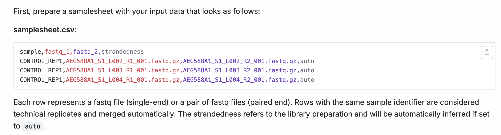

Customising and running nf-core pipelines
1.3.1. Environment setup
Reminder before starting this session, make sure you follow your institute’s HPC rulebook re: how to run a workflow manager.
At Peter Mac HPC, this would mean not running the nextflow pipeline on the login node, load the nextflow & apptainer modules, and set the container cache location (or use the institutional config)
srun --pty -p <PARTITION> --mem 8GB --mincpus 2 -t 0-5:00 bash
module load nextflow/24.10.5
export NXF_APPTAINER_CACHEDIR="/config/binaries/singularity/containers_devel/nextflow1.3.2. Design your run command
As we learnt in lesson 1.2.4, all nf-core pipelines have a unique set of pipeline-specific parameters that can be used in conjunction with Nextflow parameters to configure the workflow. Generally, nf-core pipelines can be customised at a few different levels:
| Level of effect | Customisation feature |
|---|---|
| The workflow | When diverging methods are available for a pipeline, you may choose a specific path to follow |
| A process | Where the process is executed and what software version is used |
| A tool | Apply specific thresholds or optional flags for a tool inside a process |
| Compute resources | Resource allocation thresholds or software execution methods for a workflow or a process |
It is important to remember that nf-core pipelines typically do not include all possible tool parameters. This makes it challenging to piece different sources of information together to determine which parameters you should be using.
The following sections of the nf-core documentation can be used to understand what a particular pipeline is doing, to inform your choices about aspects of pipeline-specific customisations. We will further investigate rnaseq:
| Docs | Description | Customisation level |
|---|---|---|
| Introduction | Workflow summary |
|
| Usage | Inputs and options |
|
| Parameters | Available flags |
|
| Output | Files from all processes processes |
|
Exercise: View the parameters for the nf-core/rnaseq workflow using the command line for the specific version 3.14.0
The nf-core/rnaseq workflow parameters can be printed using the nextflow run command and the --help option:
nextflow run nf-core/rnaseq -r 3.14.0 --helpPipeline structure
Looking at the nf-core/rnaseq pipeline structure provided in the introduction, we can see that the developers have:
- Organised the workflow into 5 stages based on the type of work that is being done
- Provided a choice of multiple methods and specified defaults
- Provided a choice of tool for some steps

Exercise: Observing the diagram above, which statement is true regarding the choice of alignment and quantification methods provided by the nf-core/rnaseq pipeline?
A. The pipeline uses a fixed method for read alignment and quantification.
B. Users can choose between several different methods for read alignment and quantification.
C. The pipeline always performs read alignment and quantification using STAR or HISAT2.
D. The choice of alignment and quantification method is determined automatically based on the input data.
The correct answer is B. The nf-core/rnaseq pipeline allows users to choose between pseudo-alignment and quantification, or genome-based read alignment and quantification.
- A. is incorrect because the pipeline is not limited to a single method.
- C. is incorrect because while read alignment and quantification using STAR is the default method, users can also choose the pseudo-alignment.
- D. is also incorrect, as the pipeline only accepts FASTQ files as input, and the choice of alignment and quantification method must be specified by the user.
Default pipeline usage
Typically, nf-core pipelines at a minimum require users to specify a sample sheet (--input) detailing the path to your sample data and any relevant metadata. Additionally, if a reference file version is not provided (using the --genome parameter), a default iGenomes one will be used.
You can see the recommended (typical) run command and all the parameters available for the nf-core/rnaseq pipeline by running:
nextflow run nf-core/rnaseq -r 3.14.0 --help The typical or recommended run command for this rnaseq pipeline is provided at the top of the output:

It outlines a requirement for:
--input: An input samplesheet that contains the data to be processed--outdir: A location to store outputs--genome: Relevant reference data-profile: A software management method
Nextflow-specific parameters use one (-) hyphen, whereas pipeline-specific parameters use two (--). In the typical run command above -profile is a Nextflow parameter, while --input is a Nextflow parameter.
Required input: --input
Most of us will need to adjust the default run command for our experiments. Today we’ll be adjusting the typical nf-core/rnaseq run command by:
- Providing our own reference files
- Using the
apptainersoftware management profile - Customising the execution of some processes
- Specifying the computing resource limitations of our session (2 CPUs, 8 GB RAM)
Our input fastq files (fastq/), reference data (ref/), and full sample sheet (samplesheet.csv) are already available:
TO DO Change PATH TO DATA
ls <PATH TO DATA>ERCC_index fastq ref samplesheet.csvLet’s store the path to our test data in a variable materials, so we can easily access it later.
materials=<PATH TO DATA>Since we are only testing the pipeline in this session, we only need to work with a couple of samples. Copy the first two samples from the fully prepared sample sheet to a local version of the file:
head -n 3 $materials/samplesheet.csv > ./samplesheet.csvcat samplesheet.csvTO DO Change PATH TO DATA in samplesheet
sample,fastq_1,fastq_2,strandedness
HBR_Rep1_ERCC,fastq/HBR_Rep1_ERCC-Mix2_Build37-ErccTranscripts-chr22.read1.fastq.gz,fastq/HBR_Rep1_ERCC-Mix2_Build37-ErccTranscripts-chr22.read2.fastq.gz,forward
HBR_Rep2_ERCC,fastq/HBR_Rep2_ERCC-Mix2_Build37-ErccTranscripts-chr22.read1.fastq.gz,fastq/HBR_Rep2_ERCC-Mix2_Build37-ErccTranscripts-chr22.read2.fastq.gz,forwardThe nf-core pipeline documentation will outline what metadata is required in the samplesheet:

For rnaseq, a sample value that specifies the sample name, path to FASTQ files, and strandedness is required.
Required input: reference data
Many nf-core pipelines have a minimum requirement for reference data inputs. The input reference data requirements for this pipeline are provided in the usage documentation:

In the documentation, we see that the recommended method to provide reference files is to explicitly state them using the --fasta and --gtf parameters. This means can replace the --genome flag in the typical run command with our own files. To see all available reference file parameters, rerun the pipeline’s help command to view all the available parameters:
nextflow run nf-core/rnaseq -r 3.14.0 --helpFrom the Reference genome options parameters, we will provide our own files using:
--fasta $materials/ref/chr22_with_ERCC92.fa
--gtf $materials/ref/chr22_with_ERCC92.gtf
Notice the message at the bottom of the screen:
!! Hiding 24 params, use --show_hidden_params to show them !!Keep in mind that both this --help command and the nf-core parameters documentation hides less common parameters.
Exercise: Re-run the help command to output the parameters for the nf-core/rnaseq pipeline and including all hidden parameters for version 3.14.0
Run the following:
nextflow run nf-core/rnaseq -r 3.14.0 --help --show_hidden_paramsOptional parameters
Now that we have prepared our input and reference data, we will customise the typical run command by:
TO DO Change CONTAINER
- Using Nextflow’s
-profileparameter to specify theprofile - Adding additional process-specific flags to skip duplicate read marking, save trimmed reads and save unaligned reads
- Adding additional max resource flags to specify the number of CPUs and amount of memory available to the pipeline.
Exercise: Recall that the default parameters in an nf-core pipeline are stored inside the nextflow.config file. For rnaseq, whar are the default parameters are for skipping markduplicates, saving trimmed reads, and saving unaligned reads?
The default parameters for skip_markduplicates, save_trimmed, save_unaligned are:
save_unaligned = false
skip_markduplicates = false
save_trimmed = falseExercise: How can the default reference file parameters be changed using the command line?
Using the command line, the following parameters can be set:
--skip_markduplicates true
--save_trimmed true
--save_unaligned trueExercise: What are the default maximum memory and maximum CPU parameters in the pipeline? How can we change it to 2 maximum CPUs, and 6.GB maximum memory using the command line?
Inside the nextflow.config, max_memory and max_cpus have been set to the following:
max_memory = '128.GB'
max_cpus = 16Using the command line, this can be changed with:
--max_memory '6.GB'
--max_cpus 2TO DO Change CONTAINER
Exercise: Now, let’s specify the output directory --outdir to be lesson2.1, and the software profile to be
The final command will contain our software profile, input samplesheet, output directory, reference files, custom pipeline steps, and custom resources to use.
nextflow run nf-core/rnaseq -r 3.14.0 \
-profile <CONAINER> \
--input samplesheet.csv \
--outdir ./lesson2.1 \
--fasta $materials/ref/chr22_with_ERCC92.fa \
--gtf $materials/ref/chr22_with_ERCC92.gtf \
--skip_markduplicates true \
--save_trimmed true \
--save_unaligned true \
--max_memory '6.GB' \
--max_cpus 2You can see how we’ve customised the typical run command below:
nextflow run nf-core/rnaseq --input samplesheet.csv --genome GRCh37 -profile docker4.1.3. Run the pipeline
Before running the pipeline, we will create a separate output directory for this section.
TO DO Change SCRATCH PATH
cd /scratch/users/<your-username>/nfWorkshop; mkdir ./lesson2 && cd $_Now that we have prepared our data and chosen which parameters to apply, run the pipeline using the customised command we created above. Take a look at the stdout printed to the screen. Your workflow configuration and parameter customisations are all documented here. You can use this to confirm if your parameters have been correctly passed to the run command:

As the workflow starts, you will also see a number of processes that are created underneath this. Recall that processes are executed independently and can run in parallel. Nextflow manages the data dependencies between processes, ensuring that each process is executed only when its input data is available, and all of its dependencies have been satisfied.
To understand how this is coordinated, consider the STAR_ALIGN process.

Notice a few things:
- We can see which inputs are being processed by looking at the end of the process name
- When a process starts it progressively spawns tasks for all inputs to be processed
- Two
TRIMGALOREprocesses are created, one for each sample in oursamplesheet.csv. This process has to complete beforeSTAR_ALIGNbegins - Once a
TRIMGALOREtask is completed for a sample, theSTAR_ALIGNtask for that sample begins - When the
STAR_ALIGNprocess starts, it spawns 2 tasks, one for each sample in our samplesheet
While we can specify parameters to a pipeline using the command line, this can be messy and result in huge nextflow run commands where the parameters we used is not documented. Recall earlier that a -params-file Nextflow parameter can be used to supply parameters to the pipeline.
Exercise: Create a a parameter file workshop-params.yaml, that contains our customised pipeline parameters. How can this file then be used in the nextflow run command? (Note: Nextflow parameters can’t be supplied inside a parameter file)
TO DO Change PATH TO DATA, CHANGE CONTAINER
The parameter file workshop-params.yaml should contain the following:
input: "<PATH TO DATA>/samplesheet.csv"
outdir: "<PATH TO DATA>/lesson2.1"
fasta: "<PATH TO DATA>/ref/chr22_with_ERCC92.fa"
gtf: "<PATH TO DATA>/ref/chr22_with_ERCC92.gtf"
skip_markduplicates: true
save_trimmed: true
save_unaligned: true
max_memory: "6.GB"
max_cpus: 2Note that here the full path to our reference files is provided. Since -profile is a Nextflow parameter and not a pipeline parameter, it’s not listed in the parameter file.
To run the pipeline using this parameter file, the following command can be used:
nextflow run nf-core/rnaseq -r 3.14.0 \
-profile <CONTAINER> \
-params-file ./workshop-params.yaml- nf-core pipelines contain default settings and required inputs that can be customised.
- An nf-core pipeline’s Usage, Output, and Parameters documentation can be used to design a suitable run command.
- Parameters can be used to customise the workflow, processes, tools, and compute resources.
4.1.4. Default nf-core configuration
Let’s take a closer look at configuration settings, which manage how the workflow is implemented on your system.
Nextflow’s portability is achieved by separating the workflow implementation (input data, custom parameters, etc.) from the configuration settings (tool access, compute resources, etc.) required to execute it. This portability facilitates reproducibility: by applying the same pipeline parameters as a colleague, you can achieve the same results on any machine by adjusting the resource configurations to suit your platform. This means there is no requirement to edit the pipeline code.
Together, nextflow.config and base.config can be used to define the default execution settings and parameters of an nf-core workflow.
Inside the conf/base.config file are the default compute resource settings to be used by the processes in the nf-core workflow. It uses process labels, specified with withLabel, to enable different sets of resources to be applied to groups of processes that require similar compute. Processes are labelled within the process main.nf file:
process STAR_ALIGN {
...
label 'process_high'
...
}We can over-ride these default compute resources using the command line, or a custom configuration file specifed with -c.
Now, take a few moments to look through nextflow.config.
Recall that this file is more workflow-specific, and sets the defaults for the workflow parameters such as --max_cpus, --max_memory and --max_time. These are generous values that are expected to be over-ridden with your custom settings, to ensure that no single process attempts to use more resources than you have available on your platform. To over-ride these default parameters, the command line, or a parameters file specified with -params-file can be used.
Within conf/base.config, the check_max() function will ensure that a process-specifc resource setting will not exceed the maximum settings as dictated by by --max_cpus, --max_memory and --max_time. If the process setting does exceed any of the maximum CPUs, memory, or time, that value will be over-written to the values in --max_cpus, --max_memory and --max_time.

By default, all published nf-core modules contain a process label that categorises that process based on its resource usage. This means we won’t have to specify the resources for each individual process in the pipeline – we only need to tune these resource usage groups based on our compute infrastructure.
Also notice that nextflow.config contains the software profiles available to use, such as Apptainer, Singulariy, Docker, or Conda. Each process definition script main.nf will define which software can be used – these are usually container managers or Conda environment managers. For STAR_ALIGN:
process STAR_ALIGN {
...
conda "bioconda::star=2.7.10a bioconda::samtools=1.16.1 conda-forge::gawk=5.1.0"
container "${ workflow.containerEngine == 'singularity' && !task.ext.singularity_pull_docker_container ?
'https://depot.galaxyproject.org/singularity/mulled-v2-1fa26d1ce03c295fe2fdcf85831a92fbcbd7e8c2:1df389393721fc66f3fd8778ad938ac711951107-0' :
'biocontainers/mulled-v2-1fa26d1ce03c295fe2fdcf85831a92fbcbd7e8c2:1df389393721fc66f3fd8778ad938ac711951107-0' }"
...
}A different container will be ‘pulled’ from a repository if Docker/Singularity/Apptainer is specified, or environment files will be downloaded if Conda has been specified. The default software profile can be over-ridden by specifying -profile on the command line.
Exercise: What are the default settings for maximum CPU, memory and time for the STAR_ALIGN module? How have these defaults changed after applying our customisations previously?
First, we need to determine what process label has been assigned to the STAR_ALIGN module.
STAR_ALIGN has the label process_high which by default sets 12 CPUs, 72GB of memory, 16 hours time limit, as specified in conf/base.config(https://github.com/nf-core/rnaseq/blob/3.14.0/conf/base.config).
We have previosuly applied --max_cpus 2 and --max_memory 6.GB, so the check_max() function would have reduced the final resources given to the STAR alignment process to 2 CPUs and 6GB of memory, while retaining the default maximum walltime.
4.1.5. When to use a custom config file
TO DO Change CONTAINER AND PATH EXPORT
In our runs so far, we have avoided the need for a custom resource configuration file by:
- Over-riding the default
profile that dictates how software tools are accessed - Without this, our pipeline runs would fail since we do not have each workflow tool (such as
STAR_ALIGN) installed localy on our machine - Additionally, since we use a shared container directory, the path was exported using the command
export ...=...
- Without this, our pipeline runs would fail since we do not have each workflow tool (such as
- Over-riding the default values for CPUs and memory set in
nextflow.configwith--max_cpus 2and--max_memory 6.GBto fit within our interactive sessions- Without these parameters, our pipeline runs would fail since Nextflow first checks that the requested resources are available before attempting to execute a workflow. When a process requests more resources than available, that process will fail.
However, those are basic configurations. What if:
- We wanted to increase the resources above what is set by default in pipeline process labels, to take advantage of high CPU or high memory infrastructures?
- We wanted to run on an HPC or cloud infrastructure?
- We wanted to execute specific modules on specific partitions on a cluster?
- We wanted to use a non-default software container?
- We wanted to customise outputs beyond what was possible with the nf-core workflow parameters?
4.1.6 Submitting each process as an individual job to HPC
Recall that Nextflow has a number of different scopes that can be included in configuration files. For example the params scope that we tested previously, and the profiles scope that defined software management methods.
Again, look inside conf/base.config. Notice that all the resource specifications are wrapped inside the process scope.
process {
cpus = { check_max( 1 * task.attempt, 'cpus' ) }
memory = { check_max( 6.GB * task.attempt, 'memory' ) }
time = { check_max( 4.h * task.attempt, 'time' ) }
...
}To specify how a process is executed, the process scope can also be used. Currently, all our processes are running locally on our interactive session. These processes are managed by Nextflow, which determines which inputs are available to a particular process, and launches multiple processes in parallel if there are adequate resources available.
However, instead of launching the processes in parallel locally, we can submit them as individual jobs on our HPC system. This will also execute the processes to run in parallel, but will allow for more resources to be specified beyond what is available locally.
TO DO Change to PARTITION and EXECUTOR in nectar. Change MAX LIMITS
Let’s create a custom resource file, resources.config. Paste the following into your new file:
process {
executor = 'slurm'
queue = 'PARTITION'
}
executor {
queueSize = 4
}Nextflow is compatible with many executors, including AWS, Azure, PBS, and many more – we will take a closer look later in the session. For our purposes, we are specifying the executor as slurm and the partition to be PARTITION, inside the process scope. Nexflow will submit each process as a separate job using the sbatch command.
For the purposees of this workshop, we will limit the number of concurrent jobs each user can submit to 4. This can be done using the executor scope, along with the queueSize parameter. There are many execution options that can be configured; for a full list see here.
Note that we can now adjust the --max_memory and --max_cpus that we specified in our parameter file workshop-params.yaml to suit our HPC system. Change those parameters to the following:
max_memory: "36.GB"
max_cpus: 12Now, rerun the pipeline, specifying our new resources.config file, and our updated workshop-params.yaml.
TO DO Change to CONTAINER
Make sure the previous Nextflow run has completed. If it has not completed, you can simply cancel it by running control+C. Also, add the -resume option to your nextflow run command. This will cache any already completed processes. We will investigate this functionality later in the workshop.
nextflow run nf-core/rnaseq -r 3.14.0 \
-resume
-profile <CONTAINER> \
-params-file ./workshop-params.yaml \
-c resources.configHas the executor been updated successfully? If slurm is being used, you should now notice executor > slurm (4). This indicates that a maximum of 4 concurrent jobs have been submitted, as specified in queueSize.
executor > slurm (4)
[72/1f5082] NFC…ENOME:GTF_FILTER (chr22_with_ERCC92.fa) | 0 of 1
[- ] NFCORE_RNASEQ:RNASEQ:PREPARE_GENOME:GTF2BED -
[- ] NFC…Q:PREPARE_GENOME:MAKE_TRANSCRIPTS_FASTA -
[4e/90b642] NFC…OM_GETCHROMSIZES (chr22_with_ERCC92.fa) | 0 of 1
[- ] NFC…ASEQ:PREPARE_GENOME:STAR_GENOMEGENERATE -
[- ] NFCORE_RNASEQ:RNASEQ:CAT_FASTQ -
...4.1.7. Custom resource configuration using process labels
To achieve optimum computational efficiency on your platform, more granular control may be required beyond what is capable with --max_cpus, --max_memory and --max_time.
If you instead set --max_cpus 16 to the nf-core rnaseq workflow, the STAR_ALIGN module would still only utilise 12 CPUs. This is because it has been set with the label process_high, which sets the CPUs to 12. Since 12 does not exceed the maximum allowable CPUs of 16, 12 CPUs will be utilised in the process execution.
withLabel:process_high {
cpus = { check_max( 12 * task.attempt, 'cpus' ) }
memory = { check_max( 72.GB * task.attempt, 'memory' ) }
time = { check_max( 16.h * task.attempt, 'time' ) }
}However, if we do have 16 CPUs available and there are no ther processes with fulfilled input channels that could make use of the 4 remaining CPUs, those resources would sit idle while the STAR_ALIGN process is completing.
To optimise the resource allocations for the 16 CPU platform, we might for example set --max_cpus 8 so two samples could be aligned concurrently. Another option is to over-ride the CPU resources assigned to the STAR_ALIGN module and increase it to 16.
This can be done through the process scope. Let’s now add the following process label resources to our custom resources file, resources.config.
withLabel: process_low {
cpus = 2
memory = 6.GB
}
withLabel: process_medium {
cpus = 4
memory = 12.GB
}
withLabel: process_high {
cpus = 12
memory = 36.GB
}For the purposes of our workshop, we are setting small resource limits for our HPC. Consider how this approach can be powerful when taking advantage of the compute resources available on your platform.
Save the file then re-run the workflow with our custom configuration.
TO DO Change CONTAINER
Make sure the previous Nextflow run has completed. If it has not completed, you can simply cancel it by running control+C. Also, add the -resume option to your nextflow run command. This will cache any already completed processes. We will investigate this functionality later in the workshop.
nextflow run nf-core/rnaseq -r 3.14.0 \
-resume
-profile <CONTAINER> \
-params-file ./workshop-params.yaml \
-c resources.configExamine the outputs
Once your pipeline has completed, you should see this message printed to your terminal:
-[nf-core/rnaseq] Pipeline completed successfully with skipped sampl(es)-
-[nf-core/rnaseq] Please check MultiQC report: 2/2 samples failed strandedness check.-
Completed at: 04-May-2025 15:03:01
Duration : 7m 59s
CPU hours : 0.8
Succeeded : 66The pipeline ran successfully. However, note the warning about all samples failing the strandedness check. We’ll explore that further in the next section.
In the meantime, list (ls -a) the contents of your directory, and you’ll see new directories (and a hidden directories/files) have been created:
. .. lesson2.1 .nextflow .nextflow.log .nextflow.log.1 samplesheet.csv workNextflow has created 2 new output directories, work and lesson2.1 in the current directory.
The
workdirectory:- As each job is ran, a unique sub-directory is created inside the
workdirectory. - These directories house temporary files and various command logs created by a process. This contains all the information required when troubleshooting a failed process.
We will talk in more detail about pipeline troubleshooting later in the workshop.
- As each job is ran, a unique sub-directory is created inside the
The
lesson2.1directory- All final outputs will be presented in a directory specified by the
--outdirparameter. - Inside this directory, you should have the output files grouped into common tools:
ls -a. .. fastqc multiqc pipeline_info star_salmon trimgalore- All final outputs will be presented in a directory specified by the
4.1.8. Custom resource configuration using process names
Since process labels can only specifiy resources to groups of processes that share the same label through withLabel, we can achieve greater control using withName, to specify resources for a particular process.
Similar to withLabel, using withName allows us to adjust the requirements for a specific process without needing to edit any pipeline module code (ie. the main.nf module file). With withName, multiple module names can also be specified using wildcards or or (* or |) notation.
withName has a higher priority than withLabel, meaning anything contained in withName will over-ride conflicting values in `withLabel’.
First, let’s ensure we have the specific path name for the module that we wish to target. We will be using the MULTIQC module as an example. When the rnaseq pipeline was executed, an execution file was created inside the pipeline output folder. This file is located within the pipeline_info folder, and prefixed with execution_trace along with the date of pipeline execution. Note: Change <date_of_pipeline> to the file date that is inside your folder.
ls lesson2.1/pipeline_info/execution_trace_<date_of_pipeline>.txtThis file contains a full log of each process that has ran, along with resources specified to the process and if the execution was successful. To get the full name path for the MULTIQC process, let’s search for this process name inside the execution trace
grep MULTIQC lesson2.1/pipeline_info/execution_trace_<date_of_pipeline>.txt36 f0/731167 23769653 NFCORE_RNASEQ:RNASEQ:MULTIQC_CUSTOM_BIOTYPE (HBR_Rep2_ERCC) COMPLETED 0 2025-05-04 15:55:44.676 9.7s 0ms 38.2% 3.1 MB 5.4 MB 1.4 MB 2.6 KB
52 c9/b96b9e 23769667 NFCORE_RNASEQ:RNASEQ:MULTIQC_CUSTOM_BIOTYPE (HBR_Rep1_ERCC) COMPLETED 0 2025-05-04 15:55:49.699 9.7s 0ms 40.0% 3 MB 5.4 MB 1.4 MB 2.6 KB
66 b7/aba0aa 23769685 NFCORE_RNASEQ:RNASEQ:MULTIQC (1) COMPLETED 02025-05-04 15:57:14.401 1m 35s 1m 18s 198.4% 186.7 MB 1.1 GB 44.1 GB 12.2 MBThis search returned three results. For our purposes, we will be using the last result, and the information contained in the fourth column, which provides the full process name NFCORE_RNASEQ:RNASEQ:MULTIQC. This process name indicates what workflows the particular module originated from.
For MULTIQC, any of the following names can be used:
'NFCORE_RNASEQ:RNASEQ:MULTIQC': Use theMULTIQCmodule inside theRNASEQworkflow inNFCORE_RNASEQ'.*:RNASEQ:MULTIQC': Use theMULTIQCmodule inside theRNASEQworkflow in any upstream workflows'.*:MULTIQC': Use theMULTIQCmodule in any upstream workflows
If you are running the pipeline for the first time, it can be difficult to determine the full name path to use. If you are unsure of how to build the path, you can look through the modules.config files specified for your pipeline on Github. These usually contain module specific parameters that can guide you in creating your own name path.
Let’s now add the following to our configuration file resources.config. Inside the process scope, provide the name for the MULTIQC module using the withName selector. Now, we wish to use a specific container when running that module. Change it to 'quay.io/biocontainers/multiqc:1.14--pyhdfd78af_0'
process {
...
withName: '.*:MULTIQC' {
container = 'quay.io/biocontainers/multiqc:1.14--pyhdfd78af_0'
}
} TO DO Change EXECUTOR
process {
executor = 'slurm'
queue = 'EXECUTOR'
withLabel: process_low {
cpus = 2
memory = 6.GB
}
withLabel: process_medium {
cpus = 4
memory = 12.GB
}
withLabel: process_high {
cpus = 12
memory = 36.GB
}
withName: '.*:MULTIQC' {
container = 'quay.io/biocontainers/multiqc:1.14--pyhdfd78af_0'
}
}
executor {
queueSize = 4
}Recall earlier that nf-core modules use ext.args to pass additional arguments to a module. This uses a special Nextflow directive ext. If an nf-core pipeline does not have a pre-defined parameter for a process, you may be able to implement ext.args.
The inclusion of ext.args is currently best practice for all DSL2 nf-core modules where additional parameters may be required to run a process. However, this may not be implemented for all modules in all nf-core pipelines. Depending on the pipeline, these process modules may not have defined the ext.args variable in the script blocks and is thus not available for applying customisation. If that is the case consider submitting a feature request or a making pull request on the pipeline’s GitHub repository to implement this!
Save the config then resume your run, setting outdir to lesson2.1_multiqc, along with the resource file resources.config and parameter file workshop-params.yaml:
TO DO Change CONTAINER
nextflow run nf-core/rnaseq -r 3.14.0 \
-resume
-profile <CONTAINER> \
-c my_resources.config \
-params-file workshop-params.yaml \
--outdir lesson2.1_multiqc \If your execution path for the MULTIQC module was not specified correctly, a pipeline warning would be printed, such as:
WARN: There's no process matching config selector: ...Previously, we saw that withName has a higher priority than withLabel. There are additional configuration priorities managed by Nextflow, when conflicting parameters are provided.
The settings specific with -c resources.config will over-ride those that appear in the default nf-core configurations nextflow.config and conf/base.config.
Additionally, any parameters provided in the command line will over-ride those in the -c configuration file.
To avoid confusion, it is best not to name your custom configuration files nextflow.config!
- nf-core workflows work ‘out of the box’ but there are compute and software configurations we can customise to optimise the pipeline execution on our compute infrastructure
- nf-core uses the default parameters in
nextflow.configandconf/base.config, both of which are automatically used by the pipeline - A custom configuration can be applied using
-c, and will over-ride settings in the default configs - Customisations can be targeted to either groups of processes, or specific processes using
withLabelorwithName - Workflow parameters can be specific in
-params-fileand not-c
These materials are adapted from Customising Nf-Core Workshop by Sydney Informatics Hub